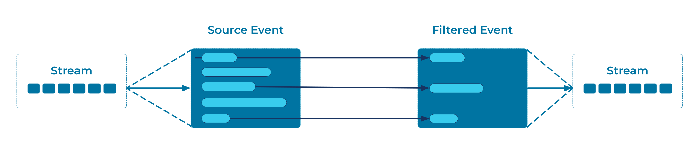

Content Filter
Events in an Event Processing Applications can often be very large. We tend to capture data exactly as it arrives, and then work on it, rather than processing it first and only storing the results. So it can often be the case that the event we want to consume has much more information in it than we actually need for the task in hand.
For example, we might pull in a product feed from a 3rd party API and store that data exactly as it was received. Later, we might ask the question, "How many products are in each product category?" and find that every event contains 100 fields, when we're really only interested in counting one. At the very least this is inefficient - the network, memory and serialization costs are 100x higher than they need to be. But if we need to manually inspect the data, this actually becomes painful; hunting through 100 fields to find and check the one we care about.
Equally we may have security and data privacy concerns to address. Imagine we have a stream of data representing users' personal details and site preferences. If the marketing department wants to get more information about our global customer base, we might be able to share the users' timezone and currency settings, but only those fields.
We need a method of storing complete events while only giving consumers a subset of their fields.
Problem
How do I simplify dealing with a large event when I am interested only in a few data items?
Solution

Create an Event Processor that inspects each event, pulls out the fields of interest, and passes new, smaller events downstream for further processing.
Implementation
As an example, in the streaming database ksqlDB
we can easily transform a rich event stream into a stream of simpler
event with a SELECT statement.
For instance, assume we have an event stream called products where
each event contains a huge number of fields. We can prune this down
with:
But we are only interested in 4 fields producer_id, category,
sku, and price. We can prune down the events to just those fields
with:
CREATE OR REPLACE STREAM product_summaries AS
SELECT
product_id,
category,
sku,
price
FROM products;
Or we can do the equivalent transformation using the Kafka Streams client library of Apache Kafka®, perhaps as part of a larger processing pipeline:
builder.stream("products", Consumed.with(Serdes.Long(), productSerde))
.mapValues(
(product) -> {
ProductSummary summary = new ProductSummary();
summary.setCategory(product.getCategory());
summary.setSku(product.getSku());
summary.setPrice(product.getPrice());
return summary;
})
.to("product_summaries", Produced.with(Serdes.Long(), productSummarySerde));
Considerations
Since filtering the content creates a new stream, it's worth
considering how the new stream will be partitioned with Partitioned
Placement. By default the
new stream will inherit the same partitioning key as its source, but
by e.g. specifying a PARTITION BY clause in ksqlDB, we can repartition the data to
suit the new use case.
In the example above, our 3rd party product feed might be partitioned
by the vendor's unique product_id, but for this use case it might
make more sense to partition the filtered events by their category.
See the ksqlDB documentation for details.
References
- This pattern is derived from Content Filter in Enterprise Integration Patterns by Gregor Hohpe and Bobby Woolf
- For filtering out entire events from a stream, consider an Event Filter.